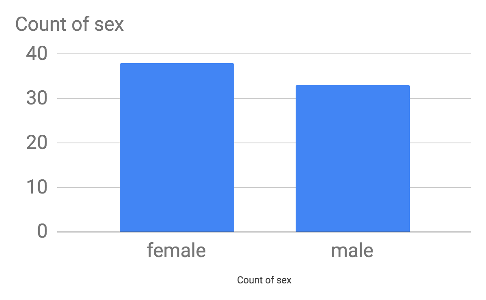
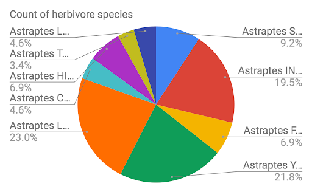

Choose one of the data sets listed above in the Activity section or one that you find on your own and give a brief description of it. What specifically were the types of data (text, sounds, transactions, etc.) included in the data set you chose?
The data sets that I chose was air pollution. In this data set it discusses the problems with air pollution and how many countries in the world has tried to control this problem. Specific types of data in my data set I chose was graphs.
What new facts did you learn when exploring the data set? List at least 3 facts.
New facts while exploring this data set was that many people living in Mumbai, India has dangerous air pollution everyday all year round, high pollution has been linked to development problems in children, and more air pollution due to climate change and fires.
Write a question you have about the data set you chose. Now, convert that question into a hypothesis (a statement) with your prediction about the data.
A question I had while reading this data set is how do they test air pollution all around the world? The amount of green houses people create is a way of testing how much pollution goes out into the air.
Identify at least one security and/or privacy concern that is associated with the data in the data set you chose?
One security/ privacy concern about this data set is would people living in those countries be scared to live there due to high pollution.
If your data set included a visualization, explain the purpose of the visualization. How would you change or improve the visualization? If it did not include a visualization, describe one that you think would be useful in understanding the data.
My data set included a graph, the purpose of the graph was to show how bad the pollution was from countries like India to countries like the US. Some improvements for the graph would add ages of people affected due to air pollution.
(Activity 2) Write a spreadsheet formula that calculates the average elevation for the data in this spreadsheet. Write your formula and the result found in your portfolio.
The formuala to find the result is a =average(J2:J88) and the result we found for the average elevation was 705.3
((Activity 2) Are there more male or female butterflies in this data set? Include a screenshot of your chart to answer this question. What kind of data is in your chart?
A question was are there more were female or male Astraptes Butterflies? The answer we found is that there are more males. The data in our chart shows the gender and how many there butterflies there are in that gender
(Activity 2) Which ecological environment (primary eco column) do these butterflies like to live in? There is no clear winner in this question so give the percentages in each ecological environment in a screenshot of your chart. What kind of data is in your chart?
The ecological enviroment butterflies like to live in is the rain forest because it has the highest percentage of 40.2%. The data in our chart is how much butterflies live in each environment.
(Activity 2) Come up with a 3rd question and use charting to answer it. Include the screenshot. What kind of data is in your chart?
My quesiton is which species has the most butterflies in it? The answer is Astraptes LONCHO has the most species of butterflies with a percent of 23%. The data in my chart is the percentage of each species of Astraptes.
(Activity 3) Include a screenshot and link of the map you created for this data.
Butterfly Map!Which data set did you select and why did you choose it?
We chose the Death Due to Drug Poisoning. We chose it because we thought it was intresting that many people can die due to drugs every year.
Summarize the data included, being specific about the types of data (text, sounds, transactions, etc.) included. Make sure you list the title and the website (URL) where you found the data.
Our data included the deaths, age, race, state it took place, gender and year it happened. We found the data on this website LINK! .
List your 3-5 hypotheses and the data visualizations that you created for each. (Include the visualizations as images on your portfolio or provide a link to them shared with your instructor.)
Hypoythesis Qs:
Which sex is mostly drug poisoned?
What race is impacted from?
How many people die a year due to drug poison?
Which age groups are impacted?
How many deaths occur within a year?"
Explain how collaborating with a partner helped you gain new insight or knowledge about the data.
Collaborating with a partner helped me gain new insights/knowledge by helping me visualize graphs easier. My partner did the graphs while I came up with the questions and her graphs really helped me see how the United States was effected by drug posioning
Identify at least one security and/or privacy concern that is associated with the data in the data set you chose.
One security/privacy concern that is associated with the data is how did they release this data, did they ask for permission after the patient was dead to take this data and put it online?